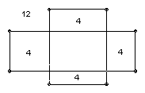
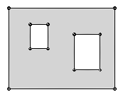

n rectangles are drawn in the plane. Each rectangle has parallel sides and the sides of distinct rectangles lie on distinct lines. The rectangles divide the plane into a number of regions. For each region R let v(R) be the number of vertices. Take the sum ∑ v(R) over the regions which have one or more vertices of the rectangles in their boundary. Show that this sum is less than 40n.

For example, for the two rectangles illustrated the sum is 28 < 80. Note that the unbounded outer region has 12 vertices, and we do not count the central region because it does not contain any vertices of the two rectangles.
Solution
We can classify vertices as convex if the angle inside the region at the vertex is 90o and concave if it is 270o. Note that a concave vertex must be a vertex of one of the rectangles. A region has a unique outer boundary and possibly one or more inner boundaries, meaning closed loops which form part of the boundary of the region but whose inside does not form part of the region. For example, the shaded region below has two inner boundaries.

Let a pair (R, P) be a region R and one of its boundaries P. The vertices of the pair are the vertices on P. The number of convex vertices of a pair less the number of concave vertices of the pair is 4 for an outer boundary and -4 for an inner boundary. To see that, lay an arrow along a side of an outer boundary pointing in the anticlockwise direction and move it anticlockwise in a complete circuit of the boundary. It rotates 90o anticlockwise at a convex vertex and 90o clockwise at a concave vertex, but it must rotate a total of 360o anticlockwise in a complete circuit. Similarly for an inner boundary (but the convex and concave vertices are interchanged).
Let N0 be the number of pairs (R, P) with P an outer boundary which contains at least one of the vertices of the rectangles, and let N1 be the number of pairs (R, P) with P an inner boundary which contains at least one of the vertices of the rectangles. The rectangles have a total of 4n vertices and each vertex is in at most two outer boundaries. So N0 <= 8n. On the other hand the unbounded region has an inner boundary which contains at least one of the vertices of the rectangles. So N1 ≥ 1.
Let B be the set of boundary pairs (R, P) where P contains at least one of the vertices of the rectangles. If b ∈ B, let xb be the number of convex vertices in P and vb be the number of concave vertices in P. Then, using the results above, the total number of vertices of regions which have at least one of the rectangles' vertices in their boundaries is ∑B (xb + vb) = ∈B 2vb + ∈ (xb - vb) = 8n + 4N0 - 4N1 ≤ 8n + 4.8n - 4 < 40n.

© John Scholes
jscholes@kalva.demon.co.uk
10 Oct 2002